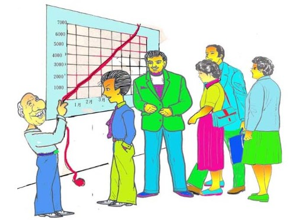

主力的操作技巧简体 江铭辉五梦网

图：主力是有能力影响股价的个人或团体
一、何谓主力
凡是有能力影响股价的个人或团体叫主力，譬如台湾以前的股市四大天王（雷伯龙、荣安丘、阿不拉、小沈）、国内信托基金、国外法人、甚至政府护盘基金都是。
二、主力操作策略
市场主力炒作股票的基本模式分为三个过程即「吸货、拉抬、出货」，施之于散户则是「养、套、杀」。
三、为什么需要知道主力操作策略
孙子兵法，谋攻篇谓：“ 知彼知己者， 百战不殆”，作股票也一样，知道主力的操作策略，了解主力运作的观念，在每天进场看盘的时候，应证自己的推理。与主力一致的炒作策略，即先于主力吸货时买进、主力拉抬时，紧握不放、主力出货时先卖出，不要想卖到最高点，陷入主力的养、套、杀。如此在股海里作个快乐的投资人。
四、主力操作三部曲「吸货、拉抬、出货」
1.吸货：
- 主力要拉抬股票，一定要吸满股票，最好此时的股票相对低、有未曝光的利多消息（譬如公司有资产处分、产业转好、或营利创新高），但这时主力手中无足够股票，要怎么办？有二个办法，一是与大股东或有股票的基金商量股票转让，并约定股票拉抬在某某价格以下，大股东或基金不能将股票杀出，间接将股票锁住，其次从股票市场吸收散户的股票。
- 判断主力吸货的征兆
主力吸货一向保密，要知道主力吸货可能不容易，但也有蜘丝马迹可寻。
（1） 某大股东将股票质押赎回
（2） 盘中有巨额转让
（3） 从报章杂志分析应有超级利多，但股价硬是不反应。
（4） 股价盘整
「股票盘整」意指每日股价总是落在某一价位区间内，这是
主力设下的股价，上有锅盖下有铁板，股价在其中飘浮，散户在不耐烦下，出脱手中持股，正好落人主力袋中。股票成交量渐渐缩小。这就是所谓的打底，大涨的前兆。
（5）连续性的下影线
下影线是有心人士的护盘动作在收盘前以市价敲进，拉出一根下影线，或是该股在下挫的过程中，被主力介入而拉升。如果一个股票连续出现下影线，当然更能表现该股有主力的身影在其中，连续几天，可判断主力已介入?
2.拉抬（点火）
- 主力在吸满股票后，接下来是拉抬股价，以便再造成风潮吸引散户注意，每个主力因为本身资金的多寡，对每一只股票有不同的拉抬习惯。资金多的容易锁定筹码，股价上升迅速，吸引散户容易，财力不足的主力，就不易锁住筹码，也有主力在长期持股不变，每日拉升的过程中以上下冲洗的手法，把股价逐步推升往上。
主力在拉抬的阶段，除非是作短线的，通常只管股价的上升和洗盘，也 就是继续将没有信心的浮额洗出，由另一批更有信心的散户接手，自己本身则视持股的多寡逐渐释出（如持股过多）或逐渐买入（如持股不足），此拉抬阶段，一般只制造强者恒强的涨势，不释放利多。以免将来出脱时，无利多消息可释无人更跟进。但是也有作短线的主力，当日将利多见报，就拉抬，将股票释出。
（1） 在股价盘整一段时间后，突然有一天在开盘时或收盘时，股价涨势异常，且此后数日股价皆上涨。
（2） 价量具增
在上涨的时候，成交量随着放大，价量配合完美，表示主力在拉 抬很多投资人希望能够获利了结，买的人也很多，主力对这只股票后势看好，拉抬有信心必须大量。这里的价量具增有一点需要说明的，即爆量剧扬，爆量剧扬如发生在初升段（主力刚打底完成开始拉抬时）则是件好事，会再拉抬股价剧烈窜升，如果股价已拉抬一阵子则要小心对应，特别当日有利多消息释出时，不过价量具增一般还是好事，代表散户把股票抛出，主力勇于买进，最可怕的是当日有利多消息出现，股价不动，甚至下跌，表示主力趁机出货。
（3） 连续强势上涨的喷出行情
这有二种表示，一则是主力的财力雄厚，一则是市场的筹码大部份已归属到主力手中，主力可任意操纵股价，如果因为主力财力不足，但满手皆是这种股票，则除非有非常的利多消息，否则出脱并不容易。
（4）强者恒强的强势股，即使大盘下跌，跌幅也比别的股票少。
3.出货
- 万般拉抬，只为「出」，主力在拉抬股价后，最终的目的当然出脱股票，将手中的股票释出给散户，释出的方法千万种，有利用报纸杂志、有透过广播电台或股友的小道消息将利多释出。如果利多消息不断传出，表示主力开始在出货。利多的种类如下：营收或盈余创新高、资产买卖或重估，政府政策利多、产业前景欣欣向荣……等等。主力出货其实也不是一般散户想象那么容易，要卖多少股票，就能卖多少。
- 主力出货征兆的判断
主力出货最难判断，因为主力出货是个人机密，此时主力与散户之间是尔虞我诈，互相猜疑。主力出货的判断如下：
（1） 上涨无量
股价虽然上涨，但成交量却萎缩，就散户而言，没有人在此高价跟进，想购买的投资人都已购买，主力也不再买进，搭拉抬意愿不高，开始有出货的盘算。
（2） 上涨无力或不涨、甚至下跌
股价虽然上涨，但只上涨一点点，成交量却暴增，这有二点可能一是散户认为满足点已到争相出脱，一是主力倒货，造成股票不升反跌，这种现象特别在当日利多见报，股票开盘时跳空上涨，盘中却被压回。
（3） 向下掼压
主力出货过程，也不只是边拉边卖，也有在拉升一段后，以往下掼压出货方式了断，这是非常残忍的手段，许多跟进的散户因不忍心赔本，舍不得卖，因而套牢。会产生向下掼压的现象一般是股价上涨已多，主力在拉抬过程也卖一些，因此采掼压手段。也有主力在拉抬过程中，突然接获隐藏性的利空，或资金不足遭到金主断头、散户卖压力道强（想卖出股票超过想买进股票）不易再拉抬。往下掼压更可怕的是原先套牢不忍卖出的股票最后也不得不差杀出，造成多杀多，滚雪球的惨剧。
（4） 开高盘，压回，尾盘小涨或开平盘，压回，尾盘小涨或拉回平盘
这是主力的典型出货手段，如果股价一直拉升，出货不易，搞不好手中满只股票，向下掼压有时自己也会受伤，只有采取「开高盘，压回，尾盘小涨或开平盘，压回，尾盘小涨或拉回平盘来回震荡」每天释出一些股票，譬如花个小钱开盘时将股价拉升，盘中出货，尾盘再发小钱将股票拉回原价或小涨，这就是所谓的震荡出货。将股票拉回原价或小涨有个好处，一则使散户心安，不急于卖股，再则第二天可以用同样价钱或更高价钱将股票卖出。
五、快乐投资人
知道主力的草炒作策略笔者建议采取下列几个方法，作个快乐投资人。
（1） 多阅读报章杂志或财经讯息，甚至政府政策，发掘利多，早一步介入主力想要发动的股票。
（2） 多读读报章杂志或财经讯息及各股票上市公司的财务报表，分析股价是否合理（分析时包括该股经营产业的趋势）。
（3） 观看股价上涨是否有量（不包括巨量但小涨），表示主力没有出脱货，或散户勇于买进。
（4） 注意利多消息出现时机，尤其是利多时股价小涨或不涨。
（5） 注意每笔股数的成交量，每笔股数成交量大股价上涨，代表有实户或主力介入。如果下跌代表有实户或主力卖出。
（6） 价跌量增加
此现象无论股票卖出者是散户或主力，都表示卖方力道加强，如果连续数日，可能还演出多杀多。
（7）到自己预估的股价（长期持有另当别论），毅然卖出，不要想卖在最高点（只有上帝才能卖在最高），否则住进套房就是你。